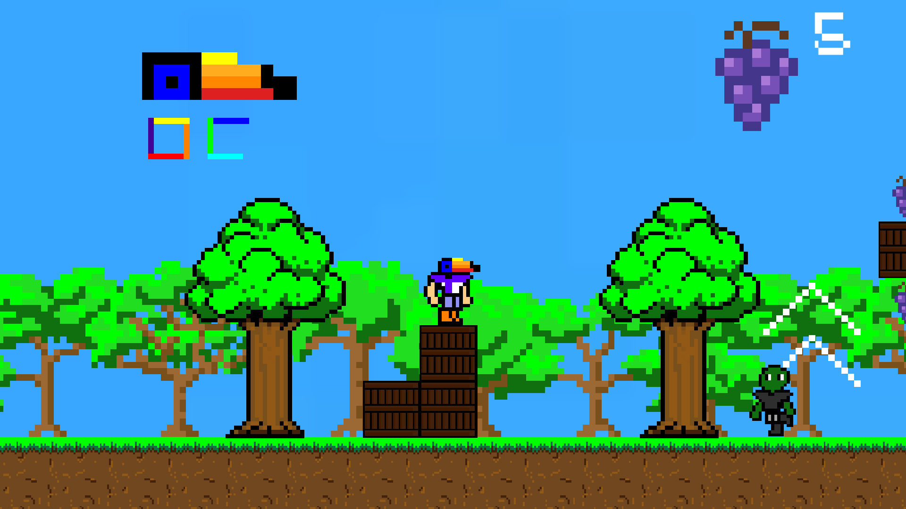
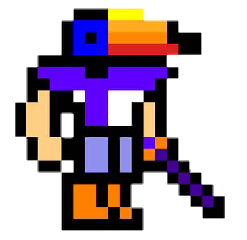
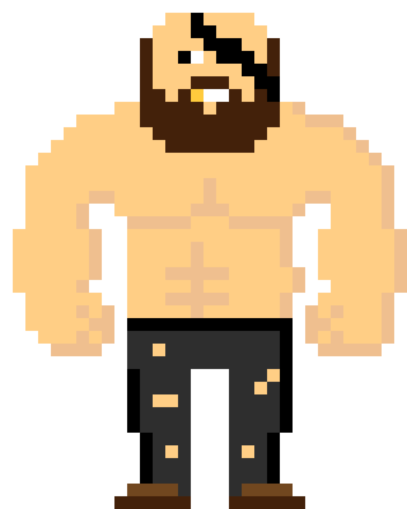
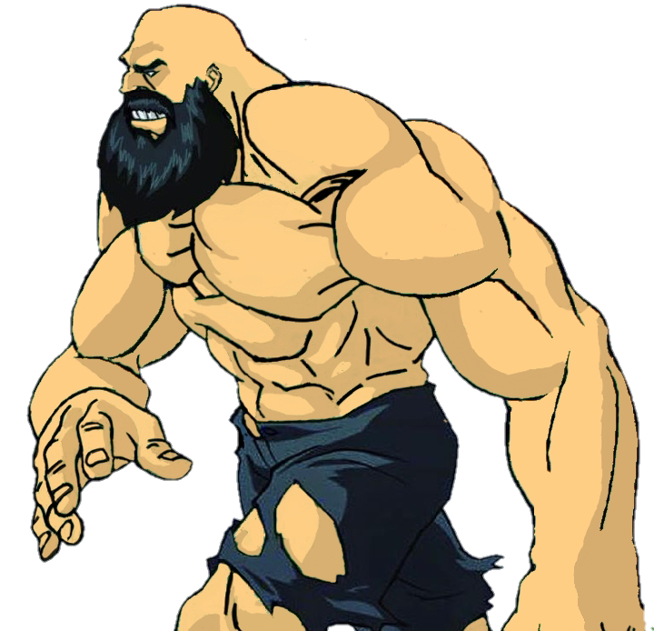

- 
- 
- 
- 
Conheça o jogo chamado 'Um Mundo Animal', um game 2D situado na grande floresta amazonica, de gênero Plataforma 2D, com um enredo que tem como base a historia de Steve, e sua luta contra a existinção dos animais da Amazônia. O projeto está sendo desenvolvido apenas por mim, me chamo Pedro Paulo, sou estudante da All Net – Taboão da Serra. Escolhi um Gênero de Plataforma 2D, visando um público nostálgico, que querem relembrar jogos como Mario, Sonic e Donkey Kong, e também um grupo querem conhecer mais sobre os animais da Amazônia. O protagonista é Steve, um homem responsavel pela proteção dos animais Amazônicos. O objetivo de Steve é parar Ronam, um traficante de animais e vilão da historia.
Você controla Steve, seu objetivo é derrotar Ronam e salvar os animais presos por ele. Você precisa explorar toda a Amazônia, enfrentando capangas, encontrando esconderijos e salvando animais. Para isso, você deve passar por várias fases, com mapas em cavernas e na floresta Amazônica. Lutando com muitos inimigos, e descobrindo dialogos que contám mais sobre a Historia.
Você terá 8(oito) de vida, perderá 1(um) a cada vez que colidir com um inimigo ou cair no void do mapa e ganhará 1(um) a cada vez que ganhar 100(cem) moedas.